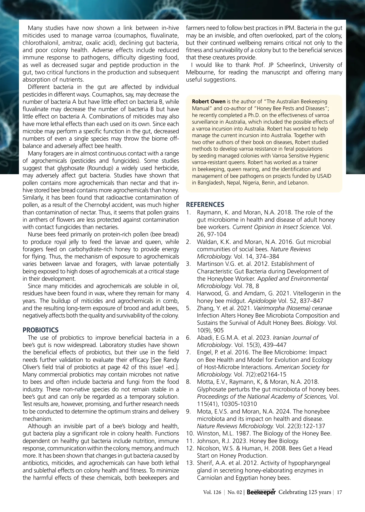

Robert Owen is the author of “The Australian Beekeeping
Manual” and co-author of “Honey Bee Pests and Diseases”;
he recently completed a Ph.D. on the effectiveness of varroa
surveillance in Australia, which included the possible effects of
a varroa incursion into Australia. Robert has worked to help
manage the current incursion into Australia. Together with
two other authors of their book on diseases, Robert studied
methods to develop varroa resistance in feral populations
by seeding managed colonies with Varroa Sensitive Hygienic
varroa-resistant queens. Robert has worked as a trainer
in beekeeping, queen rearing, and the identification and
management of bee pathogens on projects funded by USAID
in Bangladesh, Nepal, Nigeria, Benin, and Lebanon.
Many studies have now shown a link between in-hive
miticides used to manage varroa (coumaphos, fluvalinate,
chlorothalonil, amitraz, oxalic acid), declining gut bacteria,
and poor colony health. Adverse effects include reduced
immune response to pathogens, difficulty digesting food,
as well as decreased sugar and peptide production in the
gut, two critical functions in the production and subsequent
absorption of nutrients.
Different bacteria in the gut are affected by individual
pesticides in different ways. Coumaphos, say, may decrease the
number of bacteria A but have little effect on bacteria B, while
fluvalinate may decrease the number of bacteria B but have
little effect on bacteria A. Combinations of miticides may also
have more lethal effects than each used on its own. Since each
microbe may perform a specific function in the gut, decreased
numbers of even a single species may throw the biome off-
balance and adversely affect bee health.
Many foragers are in almost continuous contact with a range
of agrochemicals (pesticides and fungicides). Some studies
suggest that glyphosate (Roundup) a widely used herbicide,
may adversely affect gut bacteria. Studies have shown that
pollen contains more agrochemicals than nectar and that in-
hive stored bee bread contains more agrochemicals than honey.
Similarly, it has been found that radioactive contamination of
pollen, as a result of the Chernobyl accident, was much higher
than contamination of nectar. Thus, it seems that pollen grains
in anthers of flowers are less protected against contamination
with contact fungicides than nectaries.
Nurse bees feed primarily on protein-rich pollen (bee bread)
to produce royal jelly to feed the larvae and queen, while
foragers feed on carbohydrate-rich honey to provide energy
for flying. Thus, the mechanism of exposure to agrochemicals
varies between larvae and foragers, with larvae potentially
being exposed to high doses of agrochemicals at a critical stage
in their development.
Since many miticides and agrochemicals are soluble in oil,
residues have been found in wax, where they remain for many
years. The buildup of miticides and agrochemicals in comb,
and the resulting long-term exposure of brood and adult bees,
negatively affects both the quality and survivability of the colony.
PROBIOTICS
The use of probiotics to improve beneficial bacteria in a
bee’s gut is now widespread. Laboratory studies have shown
the beneficial effects of probiotics, but their use in the field
needs further validation to evaluate their efficacy [See Randy
Oliver’s field trial of probiotics at page 42 of this issue! -ed.].
Many commercial probiotics may contain microbes not native
to bees and often include bacteria and fungi from the food
industry. These non-native species do not remain stable in a
bee’s gut and can only be regarded as a temporary solution.
Test results are, however, promising, and further research needs
to be conducted to determine the optimum strains and delivery
mechanism.
Although an invisible part of a bee’s biology and health,
gut bacteria play a significant role in colony health. Functions
dependent on healthy gut bacteria include nutrition, immune
response, communication within the colony, memory, and much
more. It has been shown that changes in gut bacteria caused by
antibiotics, miticides, and agrochemicals can have both lethal
and sublethal effects on colony health and fitness. To minimize
the harmful effects of these chemicals, both beekeepers and
REFERENCES
1. Raymann, K. and Moran, N.A. 2018. The role of the
gut microbiome in health and disease of adult honey
bee workers. Current Opinion in Insect Science. Vol.
26, 97-104
2. Waldan, K.K. and Moran, N.A. 2016. Gut microbial
communities of social bees. Nature Reviews
Microbiology. Vol. 14, 374–384
3. Martinson V.G. et. al. 2012. Establishment of
Characteristic Gut Bacteria during Development of
the Honeybee Worker. Applied and Environmental
Microbiology. Vol. 78, 8
4. Harwood, G. and Amdam, G. 2021. Vitellogenin in the
honey bee midgut. Apidologie Vol. 52, 837–847
5. Zhang, Y. et al. 2021. Vairimorpha (Nosema) ceranae
Infection Alters Honey Bee Microbiota Composition and
Sustains the Survival of Adult Honey Bees. Biology. Vol.
10(9), 905
6. Abadi, E.G.M.A. et al. 2023. Iranian Journal of
Microbiology. Vol. 15(3), 439–447
7. Engel, P. et al. 2016. The Bee Microbiome: Impact
on Bee Health and Model for Evolution and Ecology
of Host-Microbe Interactions. American Society for
Microbiology. Vol. 7(2):e02164-15
8. Motta, E.V., Raymann, K, & Moran, N.A. 2018.
Glyphosate perturbs the gut microbiota of honey bees.
Proceedings of the National Academy of Sciences, Vol.
115(41), 10305-10310
9. Mota, E.V.S. and Moran, N.A. 2024. The honeybee
microbiota and its impact on health and disease.
Nature Reviews Microbiology. Vol. 22(3):122-137
10. Winston, M.L. 1987. The Biology of the Honey Bee.
11. Johnson, R.J. 2023. Honey Bee Biology.
12. Nicolson, W.S. & Human, H. 2008. Bees Get a Head
Start on Honey Production.
13. Sherif, A.A. et al. 2012. Activity of hypopharyngeal
gland in secreting honey-elaborating enzymes in
Carniolan and Egyptian honey bees.
farmers need to follow best practices in IPM. Bacteria in the gut
may be an invisible, and often overlooked, part of the colony,
but their continued wellbeing remains critical not only to the
fitness and survivability of a colony but to the beneficial services
that these creatures provide.
I would like to thank Prof. JP Scheerlinck, University of
Melbourne, for reading the manuscript and offering many
useful suggestions.
Vol. 126 | No. 02 |
Celebrating 125 years | 17